About This Page
Threat research is how the cloud security community learns from real attacks. This page collects the research teams, reports, feeds, and frameworks that cloud defenders actually read. Where possible, we link directly to the research output (a blog, a feed URL, or a report) rather than a vendor marketing page.
Spot something missing? Submit a PR on GitHub or email admin@csoh.org.
🧠 Vendor Research Teams
Teams that publish original cloud-focused threat research, detection logic, and attacker TTPs.

Wiz Research
Cloud-native vulnerability research — tenant isolation failures, shared-responsibility gaps, and novel CSP bugs (e.g. ChaosDB, ExtraReplica, OMIGOD).
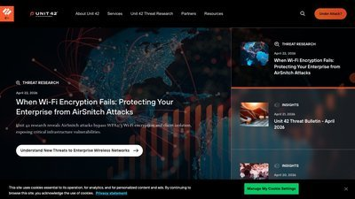
Unit 42 (Palo Alto Networks)
Threat intelligence on ransomware, APTs, cloud attack trends, and the annual Unit 42 Cloud Threat Report.
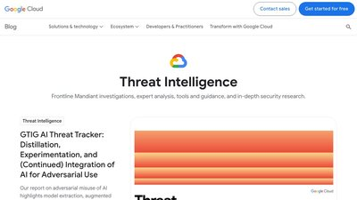
Mandiant / Google Cloud Threat Intel
Incident response telemetry, nation-state tracking (UNC/APT groups), and the annual M-Trends report.
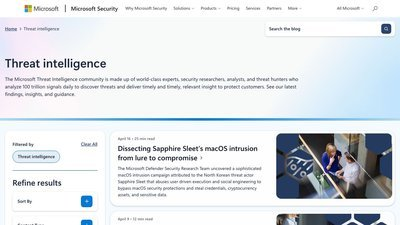
Microsoft Threat Intelligence
Tracks actors like Storm-0558, Midnight Blizzard, and Octo Tempest — with deep Azure/Entra ID attack detail.
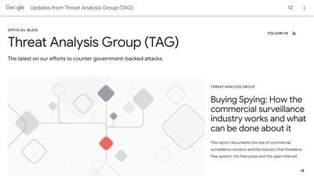
Google Threat Analysis Group (TAG)
Nation-state actor tracking, 0-day exploitation analysis, and coordinated disclosure research.
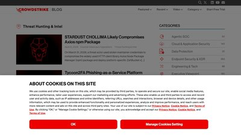
CrowdStrike Counter Adversary Ops
Adversary tracking (Scattered Spider, Cozy Bear, etc.), breakout-time stats, and the annual Global Threat Report.
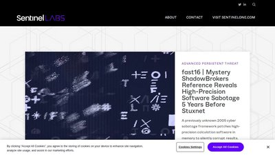
SentinelLabs
In-depth malware reverse engineering and cloud intrusion analysis (e.g. LABRAT cryptojacking, Scarleteel).
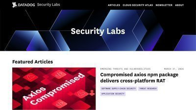
Datadog Security Labs
Cloud detection engineering research, attack path analysis, and the annual State of Cloud Security report.
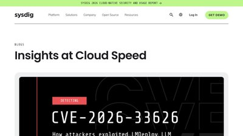
Sysdig Threat Research (TRT)
Container and Kubernetes attack research — cryptojacking operations, runtime exploits, and supply-chain threats.
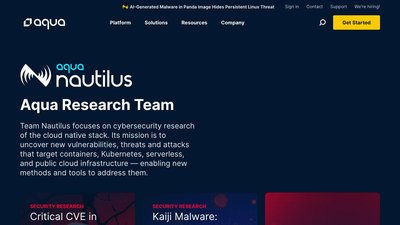
Aqua Nautilus
Cloud-native threat research focused on container registries, package repositories, and CI/CD supply chain attacks.
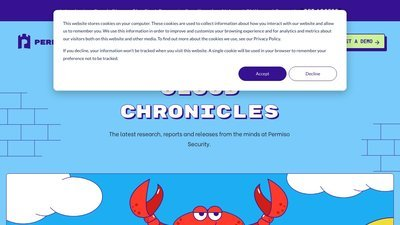
Permiso Security
Identity-centric cloud threat research: LUCR-3 (Scattered Spider), AWS privilege escalation, and IdP abuse.
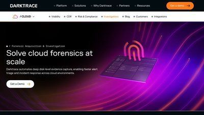
Cado Security Labs
Cloud incident response and forensics research — covers novel malware families targeting AWS, Azure, and GCP.
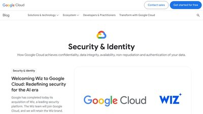
Google Cloud Security Blog
Product security research and detection content from Google Cloud, Chronicle, and BeyondCorp.
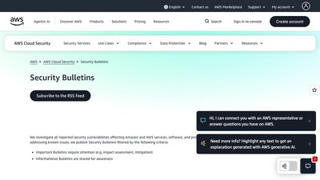
AWS Security Bulletins
Official AWS advisories for vulnerabilities affecting AWS services, open-source projects, and shared infrastructure.
Microsoft Security Response Center
MSRC advisories and vulnerability disclosure posts for Microsoft cloud, OS, and identity products.
IBM X-Force
Threat intelligence research and the annual X-Force Threat Intelligence Index with cloud attack trend data.
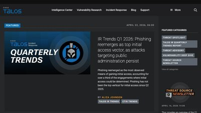
Cisco Talos Intelligence
One of the largest commercial threat intel teams — ClamAV, Snort, ransomware tracking, and deep adversary playbooks.
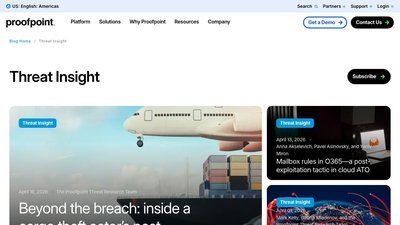
Proofpoint Threat Insight
Research into phishing, BEC, and cloud account takeover campaigns — primary source for SaaS/M365 threats.
📊 Annual Threat Reports
The reports that drive the yearly cloud-security conversation. Most are free but require a form submission.
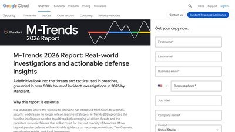
Mandiant M-Trends
Annual analysis of attacker behavior from Mandiant's incident response engagements — includes dwell time stats and cloud-specific TTPs.
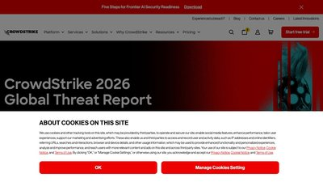
CrowdStrike Global Threat Report
Cloud intrusion growth rates, eCrime & nation-state actor profiles, and breakout-time benchmarks.
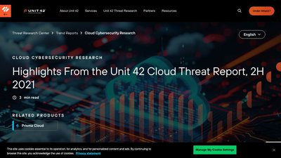
Unit 42 Cloud Threat Report
Dedicated to cloud posture and attack data from Palo Alto telemetry — config drift, exposed credentials, and misconfigurations.
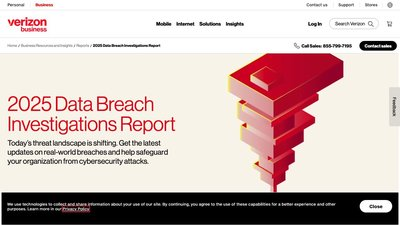
Verizon DBIR
The industry-standard Data Breach Investigations Report — thousands of incidents analyzed, with growing cloud coverage.

IBM X-Force Threat Intelligence Index
Annual trends on initial access vectors, top attacked industries, and cloud credential abuse.
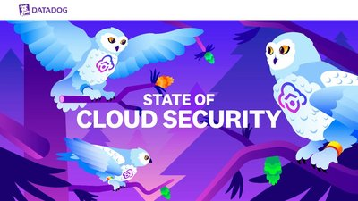
Datadog State of Cloud Security
Real-world cloud posture data — IMDSv2 adoption, long-lived credentials, and public storage exposure across thousands of accounts.

CSA Top Threats to Cloud Computing
Cloud Security Alliance's ranked list of cloud threats, updated periodically with real incident case studies (the "Pandemic Eleven").
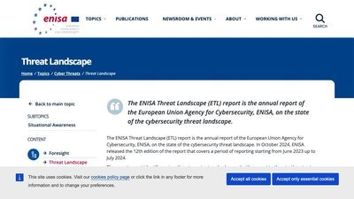
ENISA Threat Landscape
European Union's annual threat landscape report — a useful non-US perspective on cloud, supply chain, and ransomware trends.

Sophos State of Ransomware
Annual survey of ransomware victims — includes ransom payment rates, recovery costs, and attack entry points.
💥 Notable Cloud Incidents & Post-Mortems
Real attacks with detailed public write-ups. Start with our own step-by-step breach kill chains, then dig into primary sources.
🧭 CSOH Breach Kill Chains
Our in-house collection: Capital One, Storm-0558, SolarWinds, LastPass, MGM, Snowflake — all mapped to MITRE ATT&CK Cloud.
Capital One (2019)
SSRF → IMDSv1 → over-privileged IAM role → 106M records exfiltrated from S3. The case that made AWS ship IMDSv2.

Storm-0558 (2023)
Microsoft's own post-mortem on how a stolen consumer signing key was used to forge tokens for enterprise Exchange Online accounts.
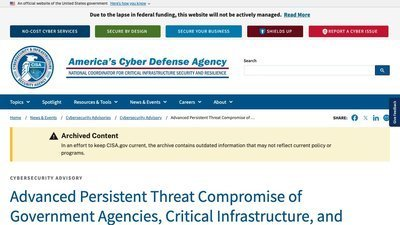
SolarWinds / SUNBURST (2020)
Supply-chain compromise that pivoted to Azure AD / M365 via Golden SAML. CISA's remediation guide is the canonical reference.

LastPass (2022–23)
Home-PC Plex exploit → keylogger → master password → AWS S3 customer vault exfiltration. 33M customers affected.
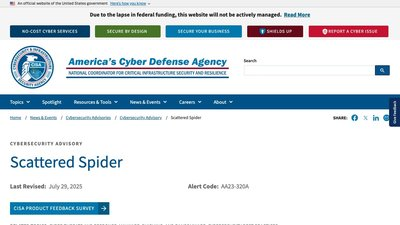
Scattered Spider / MGM (2023)
CISA joint advisory covering Scattered Spider (Octo Tempest, UNC3944) tradecraft — help-desk social engineering, Okta abuse, Azure pivot.
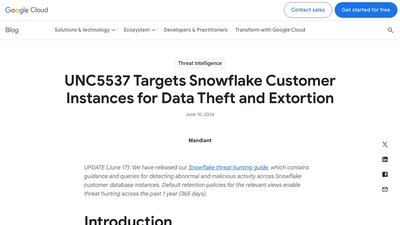
Snowflake / UNC5537 (2024)
Infostealer-harvested credentials used against Snowflake tenants without MFA — impacted 165+ organizations.
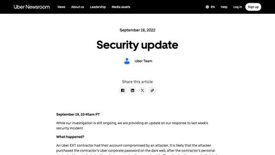
Uber (2022)
Contractor MFA fatigue → PAM vault credentials → domain admin, AWS, GCP, Slack. Uber's own disclosure.
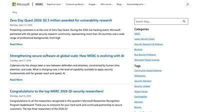
Microsoft AI SAS Token Leak (2023)
38TB of internal data exposed via an overprivileged, long-lived Azure SAS token on a public GitHub repo. Discovered by Wiz.
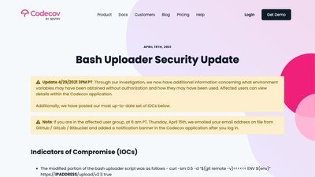
Codecov (2021)
Docker image credential compromise leading to bash uploader tampering — a supply-chain attack that exposed customer CI secrets.
Okta Support System (2023)
Okta's own post-mortem on the HAR-file compromise affecting 100% of customer support tickets.
CISA Cybersecurity Advisories
US government post-incident advisories (AA-series) — the most detailed public documentation of major ongoing campaigns.
🎯 IOC Feeds & Threat Intel Platforms
Indicators, hashes, C2 infrastructure, and enrichment sources. Most are free; some offer higher-volume paid tiers.
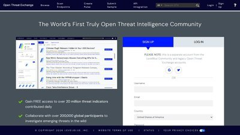
AlienVault OTX
Open Threat Exchange — community-contributed IOC "pulses" with IPs, hashes, domains, and CVEs. Free API.
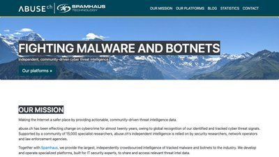
abuse.ch (URLhaus, ThreatFox, MalwareBazaar)
High-signal feeds for malicious URLs, malware samples, and C2 infrastructure. Free non-commercial use.
VirusTotal
File, URL, IP, and domain reputation — the industry's default triage tool. VT Intelligence for hunting requires a paid plan.
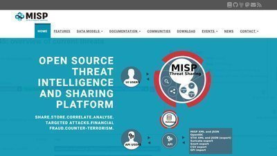
MISP
Open-source threat intelligence platform used by CERTs and enterprises for sharing, correlating, and storing IOCs.

Shodan
Search engine for internet-exposed services — find your own exposed S3, RDS, Kubernetes API servers before attackers do.
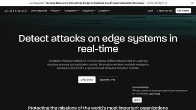
GreyNoise
Tells you whether an IP is part of internet-wide scan noise or targeted activity — cuts false positives on scan-based detections.
Censys Search
Internet scanning and attack-surface search — track adversary infrastructure (Cobalt Strike beacons, phishing kits) across the IPv4 space.
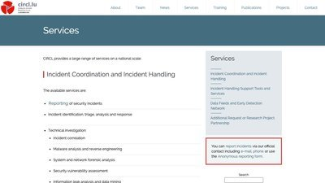
CIRCL.lu
Luxembourg CERT — hosts public passive DNS, pDNS, SSL cert history, and hashlookup services for free.
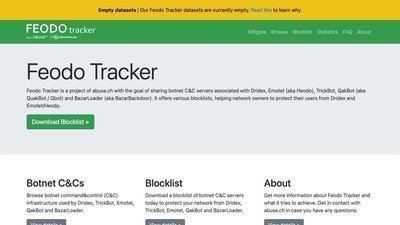
Feodo Tracker
Live feed of botnet C2 IPs (Emotet, Dridex, TrickBot, IcedID) — perfect for blocklist automation.
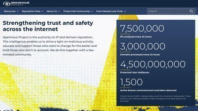
Spamhaus
Long-running IP/domain reputation feeds — SBL, XBL, PBL, and the Botnet Controller List (BCL) are widely used at perimeters.
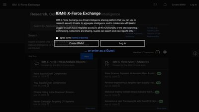
IBM X-Force Exchange
Collaborative threat intelligence platform for IOC enrichment and sharing. Free tier includes API access.
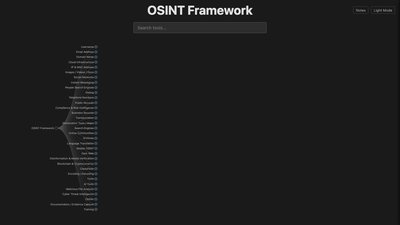
OSINT Framework
Tree of open-source intelligence resources — useful when pivoting from an IOC to actor attribution.
🗺️ Attack Frameworks & Matrices
The taxonomies you'll see referenced in every serious threat report. Learn the matrices, then use them to structure your own hunts and detections.
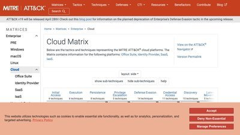
MITRE ATT&CK — Cloud Matrix
The canonical tactics/techniques mapping for AWS, Azure AD, GCP, Office 365, and SaaS attacks.
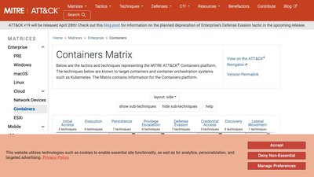
MITRE ATT&CK — Containers Matrix
Tactics and techniques focused on container runtimes and Kubernetes — including escapes and orchestrator abuse.
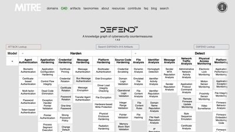
MITRE D3FEND
Defensive technique knowledge graph — pairs with ATT&CK to map what you can actually do about each technique.
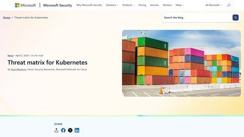
Microsoft Kubernetes Threat Matrix
Kubernetes-specific threat matrix modeled on ATT&CK — still the best starting point for K8s threat modeling.
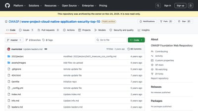
OWASP Cloud-Native Top 10
OWASP's ranked list of cloud-native application risks — complements ATT&CK with an application-layer view.
TheHive Project
Open-source SOAR/IR platform that pairs with MISP for case management and observable enrichment.
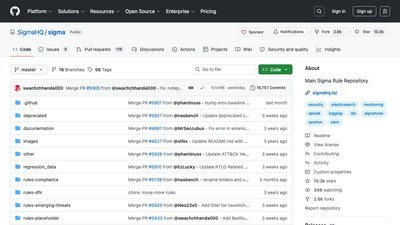
Sigma Rules
Generic, vendor-agnostic detection rule format. The public rule repo is a goldmine of ready-to-translate detections.
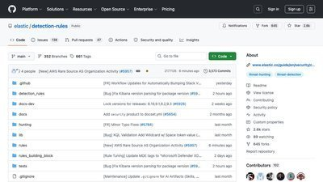
Elastic Detection Rules
Elastic's public repo of tested detections — includes cloud-focused rules for AWS, Azure, GCP, and O365.
🏛️ Government & Regulatory Advisories
Authoritative sources from CISA, NCSC, NSA, FBI, and peers — usually the first public detail on active nation-state campaigns.
CISA Advisories
US Cybersecurity and Infrastructure Security Agency — alerts, binding directives, and joint advisories.
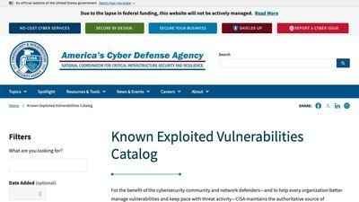
CISA Known Exploited Vulnerabilities (KEV)
Authoritative list of CVEs observed being exploited in the wild. Patch these first.
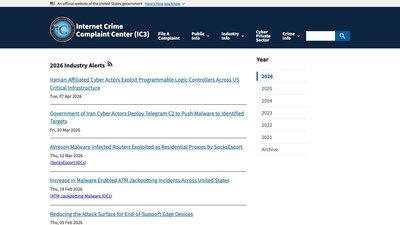
FBI IC3 Industry Alerts
FBI's public alerts on ongoing criminal campaigns — BEC, ransomware, cryptocurrency theft.
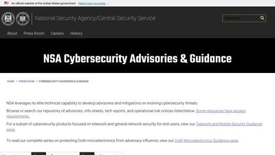
NSA Cybersecurity Advisories
NSA's public guidance — includes cloud security hardening documents and joint advisories with CISA.
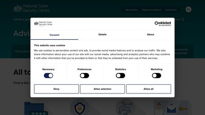
UK NCSC
UK's National Cyber Security Centre — advisories and guidance, strong on supply chain and secure-by-default cloud guidance.

Australian Cyber Security Centre (ACSC)
ACSC advisories — often first to publish on APAC-targeted campaigns and the source of the Essential Eight controls.
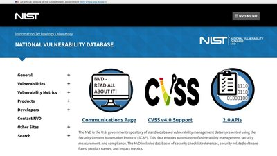
NIST National Vulnerability Database
US government CVE enrichment — CVSS scores, CPE matching, references.
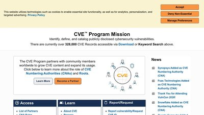
CVE.org
The authoritative CVE Program — search, watch feeds, and access the raw CVE records.
🤝 Help Us Keep This Current
Threat research moves fast and this page will go stale if the community doesn't help. Know a team, report, or feed we should add? Noticed a broken link?
📝 Submit a PR
Edit threat-research.html on GitHub and open a pull request — the fastest way to
get a new source listed.
✉️ Email a Suggestion
Not comfortable with GitHub? Email us with the source URL and a one-line description.
Email admin@csoh.org🎤 Present Your Research
Got original threat research to share? Come present it on a Friday Zoom session.
Friday Zoom Sessions